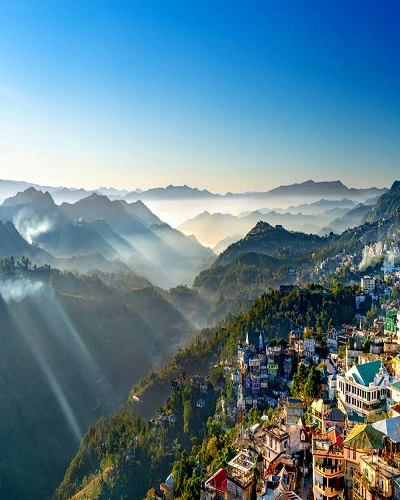
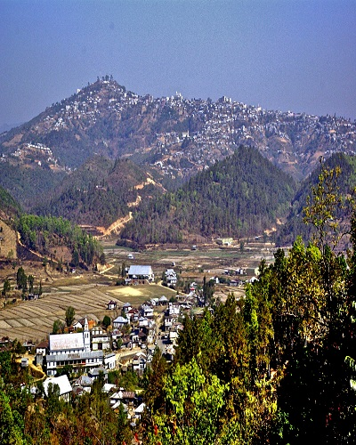
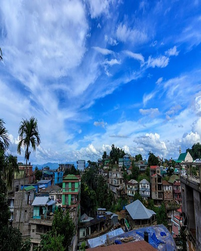
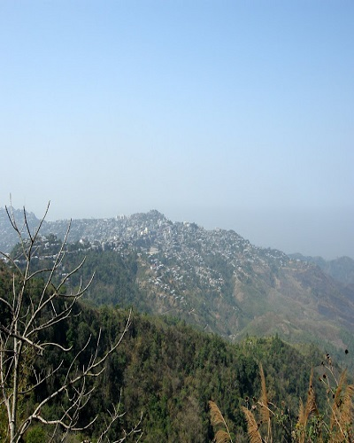
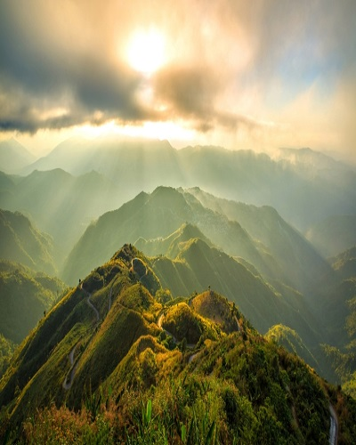
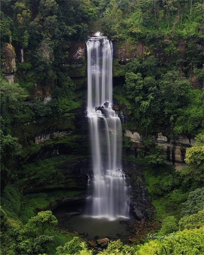

Aizawl

Champhai
Best Time to Visit Champhai — The autumn and winter months between October to March is the best time to visit Champhai. Read MoreChamphai

Kolasib
November-March is the best time to visit Kolasib. The climate in Kolasib is quite temperate throughout the year. Read MoreKolasib

Lunglei
You can visit Lunglei at any time of the year but September to April will probably be the most perfect time to plan a trip. Read MoreLunglei

Reiek
The best time for reaching this place is between September-February. During this time, the weather is suitable for enjoying trekking. Read MoreReiek

Serchhip
Winter is the ideal season to go and visit Serchhip. The weather is quite chilly. You can enjoy paragliding during these months as the weather remains quite clear and windy as well. Read MoreSerchhip

Vantawng Falls
September to January are the best months to visit Vantawng Falls due to greater clarity. Read MoreVantawng Falls